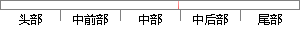

以 N 表示帧长，这三种窗函数的时域表达式如下所示。
片段位置图

相似结果|
相似片段 1：窗、海明窗以及布莱克曼窗，它们的表达式均能够用同一种数学表达式去表示。这三种窗函数均是由频率为。、西享％和石鲁％的余弦曲线合成，其中，频率里的Ⅳ是窗函数的长度。因此，这三类窗函数也可以称作广义余弦窗。3．1．1-3汉宁窗函数汉宁窗函数的时域形式为：14w㈣-o．5(1_c。
相似片段 2：如下表 2-1所示，可以得到时间透镜成像系统三部分中各部分的等效时域和频域的函数表达式。根据图 2-2(b)中的传输过程，对整个时间透镜成像系统的时域成像功能进行了推导，令输入的初始信号为
相似片段 3：下面对德拜、德鲁德和洛伦兹这三种常见的色散介质模型中所使用的辅助变量ψ的递推公式以及相应的系数 0? 进行推导。（1）德拜色散介质式(2-1)所表示的德拜色散介质的极化率函数在时域内的表达式为
相似片段 4： Copula函数是主要的三种阿基米德Copula函数。下面便简要介绍这三种阿基米德Copula函数。1、多元的Frank Copula函数的具体表达式如下所示：1 Ⅱ0一”一1)c(嘶，地，?，UN，A
相似片段 5：选取采用文献[83]中提出的路面不平度方法，参数反、P2的取值如下表所示。由此可以得到有理函数的路面不平度时域模型的表达式0(t)=一ocvq(t)+w(f) 4．(4)式中的w(力是单位白噪声序列，其协方差计算公式如下：cov[w(t)]=E[w(t)w(t+，c)]=29 2仪v6(，c) 4。
相似片段 6：分帧相当于乘以一个有限长的窗函数，在语音分析中常用的窗函数有以下三种[461。这三种窗的定义如下。(1)矩形窗矩阵窗的时频域的表达式如下所示，其中，L为窗函数的长度。删=托怄菇～(2-3，以”)2
|
※ 片段修改建议 ※
近似词参考：- 表示：暗示 默示 示意 透露表现 表现
- 如下：以下
系统自动生成语句：以 N 暗示帧长，这三种窗函数的时域表达式以下所示。
注：本片段修改建议为系统自动生成，仅供参考。